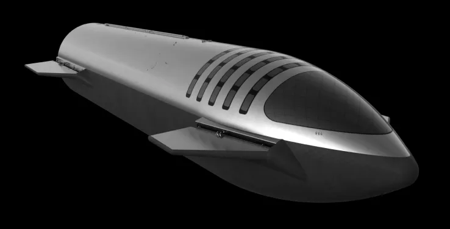

THE VEHICLES
DRAGON
The Dragon spacecraft is capable of carrying up to 7
passengers to and from Earth orbit and beyong. It is
the only spacecraft currently flying that is capable of returning
significant amounts of cargo to Earth,and is the capable
and is the first private spacecraft to take humans to the space station.
LEARN MORE
STARSHIP

Starship is the fully reusable spacecraft and second stage of the
Starship system. The vehicle offers an integrated payload section and
is capable of carrying passengers and cargo to Earth orbit, planetary
destinations,and between destinations on Earth.
LEARN MORE